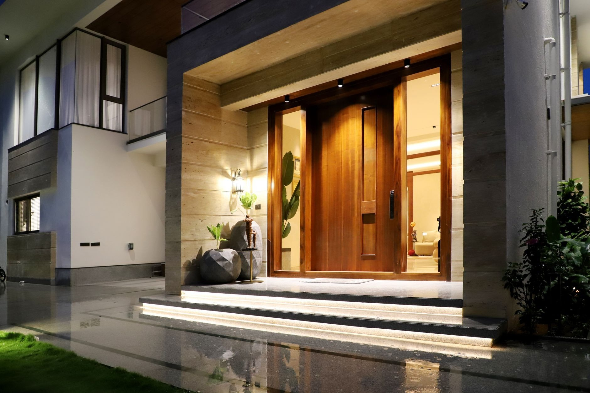

Zakres robót

Okna PVC i aluminiowe
Montujemy okna z profili Veka i Brugmann - znamy je też od strony serwisowej, więc wiemy, które okucia nie robią kłopotów po latach. Każde okno zamawiamy z własnego pomiaru, nie z przybliżenia podanego przez telefon. Do domu przy ruchliwej drodze zaproponujemy szybę o podwyższonym tłumieniu hałasu - różnicę słychać pierwszej nocy.

Wymiana okien z demontażem
Boisz się gruzu i kurzu przy wymianie? Meble i podłogi okrywamy folią, zanim ruszymy pierwszą ramę. Stare okno wyjmujemy w całości, ubytki tynku przy ościeżach poprawiamy na bieżąco, a nowe stawiamy na ciepłym montażu z taśmami rozprężnymi - żeby wokół ramy nie uciekało ciepło. Stare ramy zabieramy od razu.

Drzwi zewnętrzne
Stare drzwi się paczą i wieje przez próg? Wymieniamy całość razem z ościeżnicą, bo nowe skrzydło w krzywej ramie nic nie da. Przy montażu pilnujemy progu termicznego, uszczelek i regulacji zawiasów, a wszystkie klucze przekazujemy z ręki do ręki. Zimą przedsionek przestaje być najzimniejszym miejscem w domu.

Drzwi wewnętrzne
Drzwi pokojowe otwierasz częściej niż wszystkie inne w domu, więc krzywy montaż przypomina o sobie codziennie. Montujemy skrzydła przylgowe, bezprzylgowe i przesuwne z ościeżnicami regulowanymi, które kryją nierówności ściany po remoncie. Zawiasy ustawiamy tak, żeby nic nie skrzypiało ani nie łapało o podłogę. Otwór po starej ościeżnicy wykańczamy do gotowej ściany.

Bramy garażowe
Stara brama uchylna hałasuje i wypuszcza ciepło z garażu pod domem? Wymieniamy ją na segmentową z ociepleniem - często bez kucia nadproża, jeśli wymiary pozwalają. Sprężyny dobieramy pod ciężar konkretnej bramy, nie z jednej półki. Na koniec dostajesz piloty i pokaz awaryjnego otwierania przy braku prądu.

Rolety, moskitiery i parapety
Komary w sypialni i słońce grzejące prosto w telewizor? Moskitiery i rolety załatwiają to bez klimatyzacji. Dokładamy je do istniejących okien albo montujemy razem z nowymi - wtedy skrzynki rolet chowają się w ociepleniu i nie widać ich z ulicy. Sterowanie ręczne albo na pilota, zależnie od budżetu.
Która z usług Cię interesuje?
Napisz, co chcesz zrobić - odpowiemy z propozycją i wyceną.